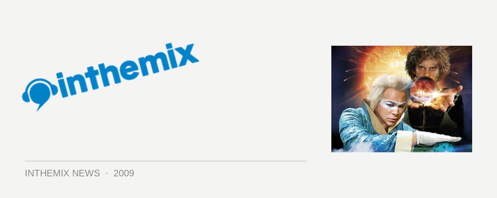

Luke and Nick to reunite for new Empire of the Sun album?
Never say never… Fresh from the group’s recent win at the ARIA Awards, where frontman Luke Steele again made slightly cryptic reference to “Invisible Nick” (otherwise known as Pnau producer Nick Littlemore* ), the enigmatic, talented and possibly slightly loopy Steele has hinted that we may see the original crew reuniting for a new album in the not too distant future. Talking recently to ITM, Steele indicated he’s expecting Littlemore eventually to return to the fold.
“He’s still a part of it, and the journey continues really,” Steele told ITM. “The whole ‘movie’ of Empire has been written in real time you know, so there has to be another scene, really.” If and when we eventually get ‘act 2’ of Empire of the Sun, then we can also expect to see the movie’s other major players, Pnau member Peter Mayes alongside Donnie Sloan, also returning to reform the original creative dynamic. Donnie was controversially quoted in the press this year as sledging Emprie of the Sun with allegations of plagiarism, but Steele insists the comments were taken out of context and blown up into a “tsunami in a tea cup”.
“It’s all been done pretty honestly as far as how everything went down with credit and who did what. It’s always been pretty open that Donnie was a big part of it, along with Peter Mayes.” While there’s been no discussion yet about the quartet returning to the studio, Steele insists there’s no love lost between the four musicians, and there’ll need to be the original dynamic in order for another Empire of the Sun album to happen.
“I mean, to get that sound it just needs to be everyone. You can’t buy that kind of chemistry at Wal-Mart; it’s pretty rare.”
Stay tuned for ITM’s full length interview with Empire of the Sun in the coming weeks, and catch them on tour around the country over summer:
Fri 1st Jan – Pyramid Rock Festival, Victoria
Sat 9th Jan – Soundscape Festival, Hobart
Sat 27th Feb – Future Music Festival, Brisbane
Sun 28th Feb – Future Music Festival, Perth
Sat 6th March – Future Music Festival, Sydney
Sun March 7th – Future Music Festival, Melbourne
Mon March 8th – Future Music Festival, Adelaide